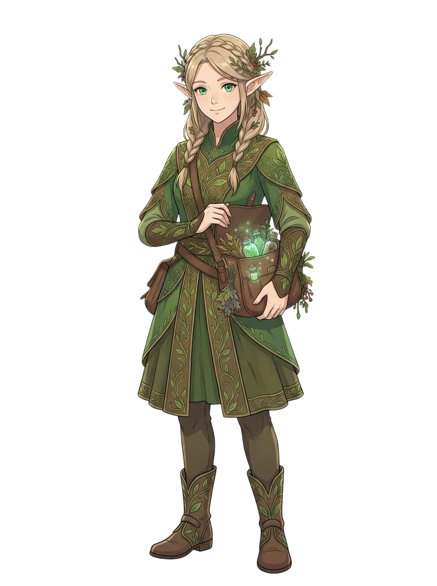
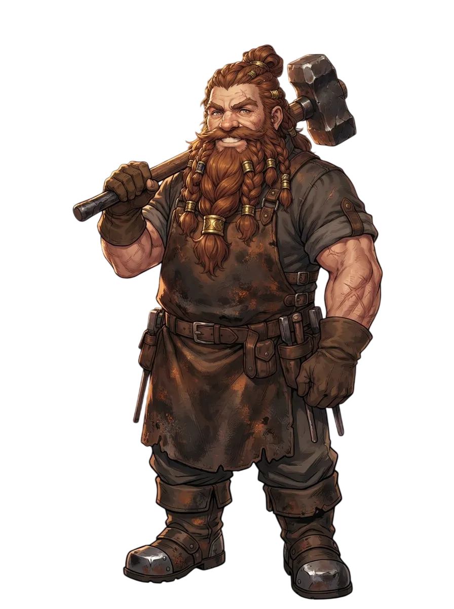
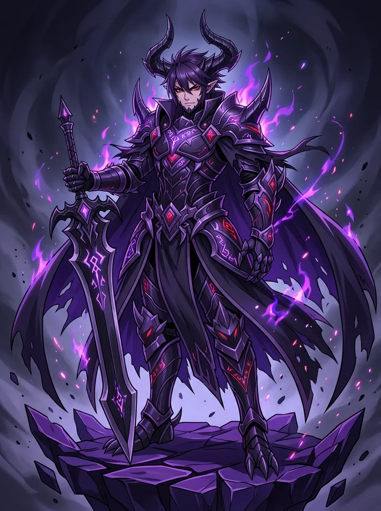
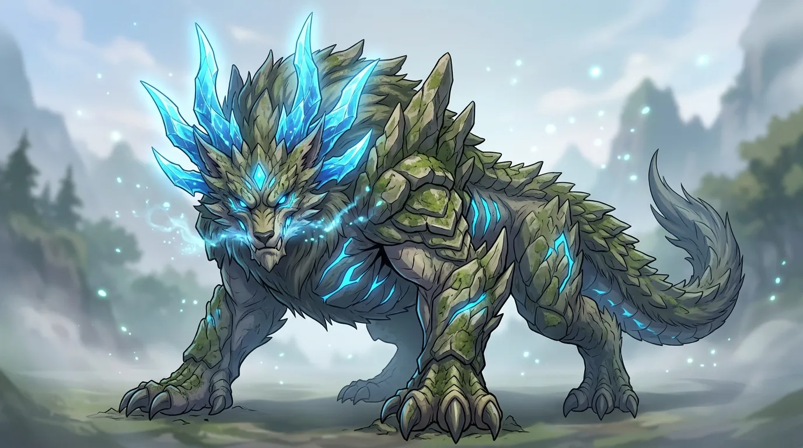

WORLD
観測されながらも踏破されぬ空白の大地。
未知の生態系、多様な種族、そして世界の果てに眠る伝承。
観測された大地と、
空白の地図
魔法と科学の発展は、遠方に広大な大陸が続くことを証明した。
だが、過酷な極限気候と凶暴な生態系、そして敵対的な「魔族」が侵入を阻み、地図の内側は未だ誰の足跡も刻まれていない。
世界観の核
観測記録はあっても、踏破者は皆無。
既存の知識は通用せず、現地での観察と判断が生死を分かつ。
望遠魔導具によって遠隔地の地形は部分的に把握されているものの、猛烈な磁場嵐や瘴気、強大なモンスターの群れが遠征隊を壊滅させてきました。
文明圏の外側に眠る未知の資源や太古の遺産は、人類の生活を一変させる可能性を秘めていますが、安全を保障する術は現地での直接観察以外に存在しません。
共存する多様な種族
異なる文化と専門技術を持ち、開拓を共にする主要種族。
-
HUMAN
人間
高い適応力と旺盛な開拓精神で、新天地の先頭に立つ多数派種族。
-

ELFエルフ / ウッドエルフ
自然界の理と古代魔導に精通。原生林の調薬技術と樹木加工を司る。
-

DWARFドワーフ
堅牢な工房を率いる鍛冶の名匠。過酷な環境を切り開く採掘技術を保持。
-
MERMAID
マーメイド
未知の海域や水路を掌握する水棲種族。水流の知識と希少な海中素材を提供。
人類の進出を阻む二大障壁

敵対的異種族「魔族」
暗黒の魔力を操り、未踏域の奥深くに潜む人類排斥の急先鋒。独自の階級社会と強力な武装を持ち、人類の開拓隊を執拗に殲滅せんと立ちはだかる。

未踏域の原生モンスター
文明圏では見られない特殊な環境に適応した凶暴な獣たち。強靭な外殻や属性攻撃を繰り出し、侵入者を容赦なく襲撃するが、倒せば極めて希少な素材をもたらす。
語り継がれる三つの伝説
「世界の先端」を誰ひとり直接目にした者はいない。伝承のどれが真実なのか。
神々の国
永久に枯れぬ豊かな大地が広がり、高潔なる神々が住まう安息の聖域。人知を超えた叡智と恵みが授けられるとされる。
破滅の地
生命が息づく余地のない崩壊の果て。荒れ狂う嵐と虚無が広がり、足を踏み入れた探求者を等しく破滅へと呑み込むとされる。
魔物の王国
人類を憎悪するモンスターの王が君臨する領域。大軍団を従え、人類を滅ぼすべく力を蓄えていると囁かれる。
五つの開拓領域と獲得できる恵み
ある地域で得た資源や技術が、別の過酷な大地を踏破する足がかりとなる。
草原エリア
平穏な風と肥沃な農牧地帯
遠征の足腰を鍛える、食料と休息の拠点
文明圏に最も近い平穏な大地。農地や放牧地を開墾して安定した食材を確保し、遠征時のスタミナ維持やHP回復の基盤となる高機能料理のレシピを解放する。
森林エリア
巨木と自然魔導素材の宝庫
自然の理と調薬技術が息づく深緑の樹海
堅牢な建築用木材や希少な魔法薬草が自生する密林。奥地に隠れ住むウッドエルフや隠れ魔女の里と交流し、状態異常を治す回復薬や魔法技術を学ぶ。
山岳エリア
雲海を臨む険峰と堅牢な石材
要塞拠点の建造と、難所を貫く短縮ルート
切り立った断崖と寒風が旅人を拒む岩山。強固な石材を切り出して頑丈な砦拠点を築き、高所の崖を整備して遠隔地へのショートカット峠道を開通させる。
鉱山エリア
地底に眠る鉱脈とドワーフの鍛冶
過酷な環境を切り裂く、屈強な武具の鍛冶場
複雑な地下洞窟と鉱脈が広がるエリア。鉄、銅、ミスリルを採掘・精錬。ドワーフの熟練鍛冶職人と巡り合い、探索者の生存力を飛躍させる上位武具を打つ。
火山エリア
灼熱のマグマと最高峰の素材
高熱環境が育む、最高峰の武具特殊付与
灼熱の熱気が立ち込める極限領域。耐熱装備と適応料理を揃えた者だけが踏破可能。ここでしか得られない超高熱耐性の素材で、最終遠征に向けた最強装備を完成させる。
※ある地域で得た素材や知識は、他の過酷な地域を開拓するための重要な足場となります。